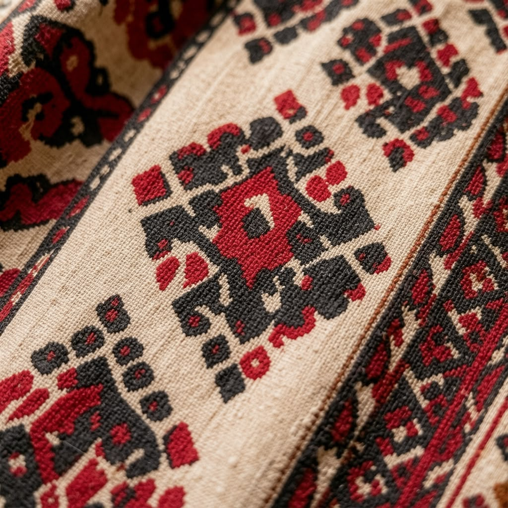
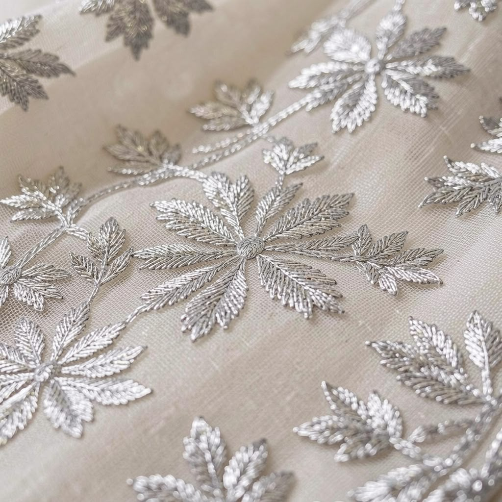
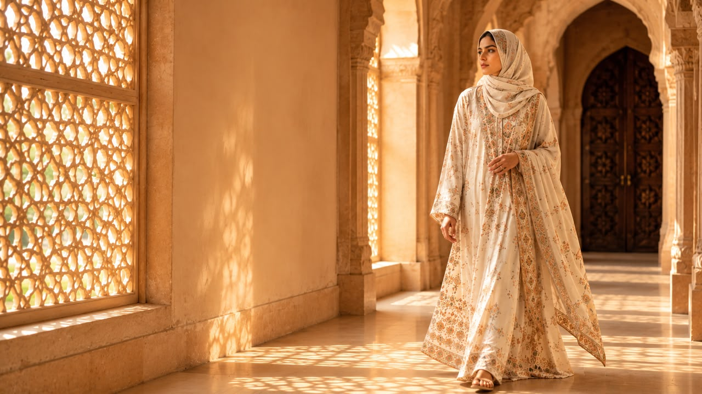

AAMKARI is devoted to preserving India's remarkable textile heritage through refined modest fashion crafted for generations to come.
AAMKARI was created with a singular vision — to honour India's extraordinary craftsmanship through garments that embody elegance, dignity and timeless modesty.
Rather than following seasonal trends, each creation reflects enduring artistry, celebrating Chanderi silk, Bagh block printing, and the remarkable hands that continue these traditions.

AAMKARI began with a simple belief — that modest fashion deserves the same reverence, craftsmanship and artistic expression as the world's finest luxury houses.
Inspired by her daughter, Aayesha, Amreen envisioned garments that celebrate dignity, confidence and timeless elegance while preserving the extraordinary textile traditions of India.
Every creation is more than clothing. It is a conversation between generations — between artisans whose hands have perfected their craft for centuries and women who carry these stories into the future with grace.
At AAMKARI, heritage is not preserved inside museums. It is worn. It moves. It lives.

Every collection begins with India's remarkable cultural legacy, celebrating architecture, textiles and craftsmanship.

Every garment honours the artisans whose knowledge has been passed through generations.

Elegant silhouettes created for women who believe that confidence and grace never go out of style.